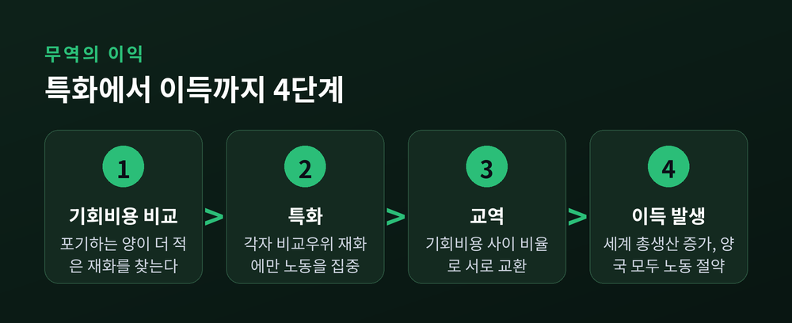
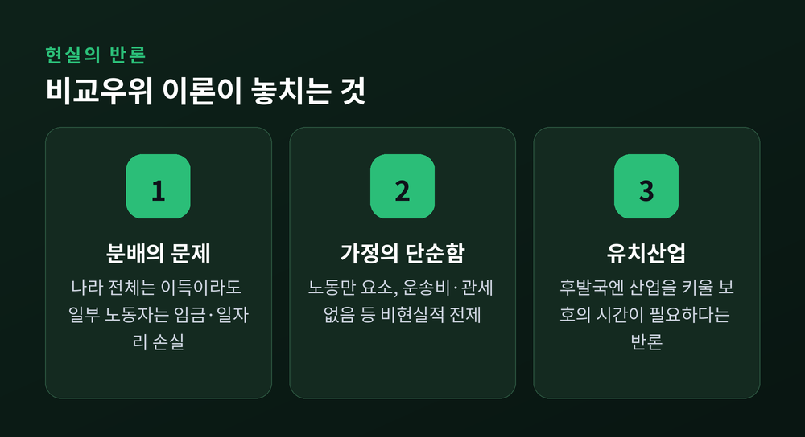

리카도의 200년 전 계산으로 푸는 무역의 수수께끼
이번 글에서는 경제학에서 가장 우아하다고 불리는 개념, 비교우위를 정리해 보겠습니다. 한 나라가 모든 것을 더 잘 만드는데도 왜 굳이 다른 나라와 무역을 하는지, 그 오래된 수수께끼를 리카도의 200년 전 계산을 따라가며 풀어봅니다.
무역을 처음 설명한 사람은 애덤 스미스입니다.
그의 논리는 단순합니다. 각 나라가 남보다 싸게 만드는 물건에 집중하고, 그것을 서로 바꾸면 모두가 이득을 본다. 이를 절대우위라고 부릅니다.
그런데 여기에는 빈틈이 있습니다.
만약 어떤 나라가 모든 물건을 다 싸게 만든다면 어떨까요. 스미스의 설명대로라면, 그 나라는 누구와도 무역할 이유가 없어야 합니다. 하지만 현실은 그렇지 않았습니다.
실제로 어떤 나라는 웬만한 물건을 다 값싸게 만들면서도 여전히 활발히 무역을 합니다. 스미스의 틀로는 이 장면이 잘 설명되지 않습니다.
이 빈틈을 메운 사람이 데이비드 리카도입니다. 1817년, 그는 《정치경제학과 과세의 원리》에서 답을 내놓습니다. "다 잘하는 나라도 무역을 해야 한다"는, 언뜻 이상해 보이는 결론이었습니다. 이것이 오늘날까지 국제무역 이론의 주춧돌로 남은 비교우위입니다.
리카도는 잉글랜드와 포르투갈, 두 나라를 예로 들었습니다. 물건은 포도주와 옷감입니다.
각 물건 한 단위를 만드는 데 필요한 노동을 표로 보면 이렇습니다.
숫자를 보면 이상한 점이 눈에 띕니다.
잉글랜드는 옷감 한 단위에 100명, 포도주 한 단위에 120명이 듭니다. 포르투갈은 옷감에 90명, 포도주에 80명이면 됩니다.
포르투갈은 두 물건 모두 잉글랜드보다 적은 노동으로 만듭니다. 두 재화 전부에서 절대우위를 가진 셈입니다.
상식대로라면 포르투갈은 무역할 이유가 없어 보입니다. 다 자기가 더 잘 만드니까요. 도리어 잉글랜드가 손을 벌려야 할 처지로 보입니다.
그런데 리카도의 답은 정반대였습니다. 이런 상황에서도 두 나라가 무역하면 둘 다 이득이라는 것입니다. 그는 이것을 말이 아니라 숫자로 증명했습니다.
리카도가 본 것은 생산비 자체가 아니라 기회비용이었습니다.
기회비용이란, 한 가지를 얻기 위해 포기해야 하는 다른 것의 양입니다.
포르투갈이 포도주 한 단위를 만들려면 옷감 약 0.89단위를 포기해야 합니다. 잉글랜드가 같은 포도주를 만들려면 옷감 1.2단위를 포기해야 합니다.
즉 포도주를 만들 때 잃는 것이 포르투갈 쪽이 더 적습니다. 포르투갈은 포도주에 비교우위가 있습니다.
반대로 옷감은 어떨까요. 잉글랜드가 옷감을 만들 때 포기하는 포도주는 약 0.83단위, 포르투갈은 1.125단위입니다. 옷감은 잉글랜드가 덜 포기합니다. 잉글랜드는 옷감에 비교우위가 있습니다.
핵심은 이 한 문장으로 압축됩니다.
"모든 것을 잘하는 나라도, 자기가 상대적으로 더 잘하는 하나에만 집중하는 편이 이득이다."
그다음은 특화와 교역입니다.
포르투갈은 포도주에만, 잉글랜드는 옷감에만 노동을 몰아넣습니다. 그리고 서로 바꿉니다.
이렇게 하면 두 나라가 따로따로 두 물건을 다 만들 때보다 세계 전체의 생산량이 늘어납니다. 늘어난 몫이 곧 무역의 이익입니다.

노동으로 따져보면 더 뚜렷합니다.
잉글랜드가 포도주를 직접 만들면 120명이 듭니다. 그런데 옷감(100명분)을 만들어 포르투갈 포도주와 바꾸면, 사실상 100명분 노동으로 포도주를 손에 넣는 셈입니다. 20명분을 아낀 것입니다.
포르투갈도 마찬가지입니다. 옷감을 직접 만들면 90명이 필요하지만, 포도주(80명분)를 만들어 잉글랜드 옷감과 바꾸면 80명분으로 옷감을 얻습니다. 10명분이 굳습니다.
한쪽이 이득을 보려고 다른 쪽이 손해를 보는 구조가 아닙니다. 두 나라가 동시에 노동을 아낍니다. 없던 이익이 특화에서 새로 생겨나는 것입니다.
교환 비율만 두 나라의 기회비용 사이에서 정해지면, 양쪽 모두 예전보다 더 많이 쓸 수 있습니다.
이 원리는 나라 사이에만 통하는 것이 아닙니다.
서류 정리를 비서보다 빨리 하는 변호사를 떠올려 봅니다. 그래도 그는 서류를 직접 하지 않습니다. 그 시간에 변론을 하면 훨씬 큰 값을 벌기 때문입니다. 다 잘해도 분업하는 것, 그것이 비교우위입니다. 아무리 다재다능한 사람이라도 기회비용 앞에서는 결국 하나에 집중하게 됩니다. 직업이 나뉘고 교역이 생기는 뿌리가 여기에 있습니다.
비교우위는 한자리에 머물지도 않습니다.
예전엔 한국이 신발과 가발을 수출했습니다. 지금은 반도체와 스마트폰을 수출합니다. 2023년 반도체 무역수지 흑자만 250억 달러를 넘어, 한국 전체 흑자를 떠받쳤습니다. 비교우위는 고정된 것이 아니라, 자본과 기술이 쌓이며 옮겨 다닙니다. 이것을 동태적 비교우위라고 부릅니다.
비교우위는 아름다운 이론입니다. 폴 새뮤얼슨은 이를 두고 "사회과학에서 몇 안 되는, 참되면서도 자명하지 않은 명제"라고 했습니다.
다만 아직 완벽한 설명은 아닙니다. 현실에는 이론이 지운 조건들이 살아 있습니다.

먼저, 이론의 가정 자체가 단순합니다. 리카도의 모형은 생산요소를 노동 하나로 놓고, 노동은 나라 사이를 넘나들지 않으며, 운송비도 관세도 없다고 봅니다. 현실의 무역은 이 깔끔한 조건 밖에서 벌어집니다.
무엇보다 나라 전체가 이득이라 해도, 그 안의 누군가는 손해를 봅니다. 비교우위를 잃은 산업의 노동자는 임금이 깎이거나 일자리를 잃을 수 있습니다. 스톨퍼-새뮤얼슨 정리가 말하는 대목이 바로 이것입니다. 새뮤얼슨조차 이 분배의 문제를 인정했습니다. 세계 전체의 이득이 승자에게서 패자에게로 저절로 나눠지지는 않는다는 것입니다.
경제학자 장하준은 다른 각도에서 반문합니다. 지금의 선진국도 자국 산업이 자랄 때까지는 보호무역으로 지켰다는 것입니다. 걸음마 단계의 산업을 곧바로 자유무역에 내던지는 것이 과연 공정하냐는 물음입니다. 후발국에는 산업을 키울 시간이 필요하다는 유치산업 보호론이 여기서 나옵니다.
이론은 세계 전체의 이득을 말합니다. 현실은 그 이득을 누가 갖고 누가 잃는지를 묻습니다. 두 물음 모두 정당합니다.
정리하면 이렇습니다.
비교우위는 "다 잘하는 나라조차 무역해야 하는 이유"를 기회비용이라는 한 단어로 풀어낸 통찰입니다. 200년이 지나도 그 골격은 여전히 튼튼합니다.
다만 그 이득이 모두에게 골고루 돌아가는가는, 이론이 아니라 우리가 만드는 제도의 몫입니다.
무역이 왜 존재하느냐고 누가 묻는다면, 저는 이렇게 답하겠습니다. 서로 다르기 때문이 아니라, 서로 다른 것을 포기할 줄 알기 때문이라고.